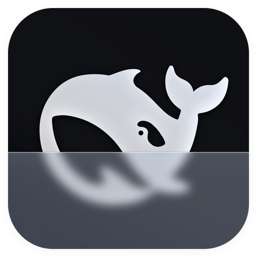

DSH Private
输入密码，继续你的私密聊天。
请妥善保存此密码，遗失后无法找回。
Connection / 本地模型设置
Connect your own local OpenAI-compatible server. / 连接自己的本地模型服务。
聊天默认不保存；手动保存的聊天会加密存储在 本机加密目录。

输入密码，继续你的私密聊天。
请妥善保存此密码，遗失后无法找回。
Connect your own local OpenAI-compatible server. / 连接自己的本地模型服务。
聊天默认不保存；手动保存的聊天会加密存储在 本机加密目录。